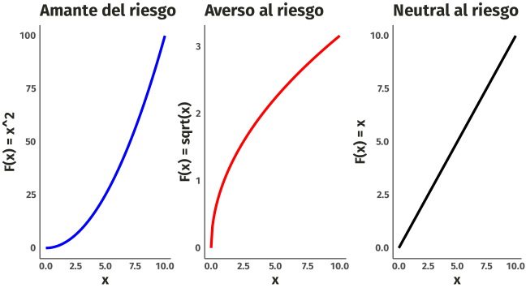

![]()
| Lotería | Utilidad Valor esperado | Signo | Utilidad esperada | Decisión? |
|---|---|---|---|---|
| 1 | 158,11 | es menor a | 3166,20 | Elegir |
| 2 | 223,60 | es menor a | 3170,08 | Elegir |
| 3 | 2236,06 | es mayor que | 1596,87 | Aversión |
Fundamentos de Teor√≠a Economica Ô∏èüôÇ
Diseño y Evaluación de Proyectos
Preguntas de la sesión anterior?
Para hoy… intentamos aprender
Saber de riesgo
Modelar el riesgo
Los seguros y su importancia
Que entiende usted por Riesgo?
Riesgo
Todos los individuos toman decisiones todos los días. Sin embargo, no siempre es claro para nadie qué resultados pueden derivarse de estas decisiones. Cuando eso sucede, podemos decir que estamos tomando decisiones en situaciones bajo riesgo o incertidumbre
Riesgo: Los individuos desconocen los diferentes resultados, pero pueden asignarles probabilidad de ocurrencia.
Incertidumbre: Los individuos no pueden asignar probabilidad a cada resultado que le pudiera ocurrir aún si pudieran escoger. La naturaleza todo el tiempo le brinda a los individuos estado o estatus de incertidumbre.
Riesgo
- La presencia de la incertidumbre supone que las consecuencias que se derivan de cada alternativa disponible no se conocen con antelación, sino por el contrario, dependen de la ocurrencia de sucesos aleatorios fuera del control de los consumidores y/o agentes económicos.
Cuando formula un proyecto
Cuando elige su carrera profesional.
Cuando va a comprar una casa.
Si compra un seguro (vida, vehículo, etc.).
Cuando elige un presidente.
Riesgo
Algunos conceptos claves de esta parte que hay que tener presente
Valor Esperado
Utilidad Esperada
Utilidad del Valor Esperado
Riesgo
Valor esperado
El valor esperado es la media de los valores conocidos “certeza”, que un individuo sabe que puede ocurrir un evento. Ejemplo: los resultados del lanzamiento de un dado.
\[\mathbb{E} [x]= \sum\limits_{i=1}^{n} p_{i} X_{i}\]
\[\mathbb{E} [x]= \frac{1}{6}*1+\frac{1}{6}*2+\frac{1}{6}*3+\cdots+\frac{1}{6}*6=3.5\]
Que es lo mismo si calculara un promedio normal de:
\[\frac{1+2+3+4+5+6}{6}=3.5\]
Riesgo
Suponga que a usted le han propuesto jugar las siguientes loterías, solo debe escoger una de ellas. Cuál prefiere jugar o cuál elegiría:
- Si se lanza una moneda al aire y sale cara gana
$100.000y si sale sello usted pierde$50.000.
- Si se lanza una moneda al aire y sale cara gana
$200.000y si sale sello usted pierde$100.000.
- Si se lanza una moneda al aire y sale cara gana
$20.000.000y si sale sello usted pierde$10.000.000.
Cuál elige?
Riesgo
Miremos las opciones con el Valor Esperado
Para la lotería 1:
\[\mathbb{E}[x]=100.000\times0.50+\color{#d62013}{-50.000}\times 0.50= 25.000\]
Para lotería 2:
\[\mathbb{E}[x]=200.000\times0.50+\color{#d62013}{-100.000}\times 0.50= 50.000\]
Finalmente, la lotería 3:
\[\mathbb{E}[x]=20.000.000\times0.50+\color{#d62013}{-10.000.000}\times 0.50= 5.000.000\]
- La tercera lotería por este criterio, debería ser elegida.
Riesgo
Las loterías ayudan a mirar lo que finalmente puede desear una persona. Tome a consideración la siguiente oferta:
A. Una lotería que le ofrece $120.000 con probabilidad de 50% o nada con igual probabilidad.
B. Ganarse con certeza $50.000
Cuál elige?
Riesgo
La lotería que mayor Valor esperado tiene es la elegida.
Para la primera lotería (A):
\[\mathbb{E}[x]=0\times 0.50+\color{#44C1C4}{120000}\times 0.50= 60.000\]
Para la segunda
\[\mathbb{E}[x]=\color{#44C1C4}{50.000}\times 1= 50.000\]
Hay que ver que tipo de riesgo toma una persona para mirar que loteria acepta. Para este parte vamos hacer otras adiciones.
Utilidad esperada
Utilidad esperada
Cada resultado posible puede cuantificarse en términos de útiles, y representarse a través de la función de utilidad de un consumidor. Ej: La función de utilidad es \(F(X)=\sqrt{x}\),
\[U\mathbb{E}[x]=\sqrt{0}\times 0.50+\sqrt{\color{#44C1C4}{120000}}\times 0.50= 173,20\]
\[U\mathbb{E}[x]=\sqrt{50.000}= 223,60\]
Si la Utilidad esperada de una lotería es mayor a la otra se elegirá esa por dar mayor “bienestar” a la persona
Utilidad esperada
| Tipo | Función f(x) |
|---|---|
| No riesgos | \(\sqrt{x}\) |
| Neutrales | \(ax+b\) |
| Gusto al riesgo | \(e^x\) |
Estas funciones de utilidad son construidos por Matemáticos que han encontrado esto de forma estructural.
De acuerdo a como maneja sus perfil, las funciones podrán tratar de simular su comportamiento
Utilidad esperada
Actitudes hacia el Riesgo
Existen tres actitudes principales hacia el riesgo que se reflejan en las funciones de utilidad:
- Amante del riesgo (risk-loving)
- Averso al riesgo (risk-averse)
- Neutral al riesgo (risk-neutral)
Cada una de estas actitudes tiene una función de utilidad característica.
Utilidad esperada
Función para Amante del Riesgo
- Función: \(F(x) = x^2\)
- Características:
- Función convexa: \(F''(x) > 0\)
- Prefiere situaciones con mayor incertidumbre.
- Valora más las ganancias potenciales en situaciones de alto riesgo.
\[F(x) = x^2\]
Utilidad esperada
Función para Averso al Riesgo
- Averso al Riesgo:
- Función: \(F(x) = \sqrt{x}\)
- Características:
- Función cóncava: \(F''(x) < 0\)
- Prefiere la certeza y evita la incertidumbre.
\[F(x) = \sqrt{x}\]
Utilidad esperada
Función para neutral al riesgo
- Neutral al Riesgo:
- Función: \(F(x) = x\)
- Características:
- Función lineal: \(F''(x) = 0\)
- Indiferente entre la certeza y la incertidumbre.
\[F(x) = x\]
Utilidad esperada
Regresemos al ejemplo original con las loterías de las monedas. Vamos añadir información adicional. Suponga que Mateo tiene una riqueza inicial de 10 millones y él se considera averso al riesgo.
\[U\mathbb{E}[x_a]=\sqrt{10.100.000}\times0.50+\sqrt{9.950.000}\times 0.50= 3166,20\]
\[U\mathbb{E}[x_b]=\sqrt{10.200.000}\times0.50+\sqrt{9.900.000}\times 0.50= 3170,08\]
\[U\mathbb{E}[x_c]=\sqrt{30.000.000}\times0.50+\sqrt{0}\times 0.50= 1596,18\]
Note que por ser averso al riesgo no va a tomar la tercera lotería que le ofrece un mayor premio.
Utilidad del Valor Esperado
Utilidad del Valor Esperado
La utilidad expresada en la esperanza de los valores de los individuos dada la forma de su función de utilidad.
Nuevamente, tomemos la información de la lotería de la moneda y hallemos de acuerdo a los valores esperados su Utilidad del Valor Esperado
\[U (V.E_a)= \sqrt{25.000}= 158,11\; \textrm{útiles}\]
\[U (V.E_b)= \sqrt{50.000}= 223,60\; \textrm{útiles}\]
\[U (V.E_c)= \sqrt{5.000.000}= 2236,06\; \textrm{útiles}\]
Utilidad del Valor Esperado
Si la Utilidad del Valor Esperado \(U(V.E)\) es > \(U(\mathbb{E})\) y el individuo la elige, es porque en realidad es averso al riesgo
Comparaciones
| Tipo | Función f(x) |
|---|---|
| Aversión | \(U(V.E)>U.E\) |
| Indiferente | \(U(V.E)=U.E\) |
| Gusto al riesgo | \(U(V.E)<U.E\) |
Utilidad del Valor Esperado
Utilidad del Valor Esperado
Depende mucho de los perfiles de los individuos.
Prima de Riesgo
Prima de Riesgo
Para el concepto de Prima, piense en el monto (valor) que debe pagar un individuo para evitar un riesgo.
Las personas que suelen ser aversas al riesgo suelen tener primas de riesgo positivas. Mientras que los amantes al riesgo suelen tener primas negativas.
En cuanto a los neutrales al riesgo sus primas de riesgo simplemente son cero (0).
- La prima de riesgo viene a ser:
\[\mathbb{P}.\mathbb{R}= Valor\;Esperado - Equivalente \; Certeza\]
Prima de Riesgo
El equivalente de certeza es la plata o valor que hay que darle al individuo para que tenga el mismo nivel de bienestar si enfrenta un riesgo.
La Prima es lo que esta dispuesto a pagar un individuo para no incurrir en un riesgo.
Hallemos la prima de riesgo para la lotería (3) en caso tal el individuo no desee enfrentarse a esa situación.
Cuanto dinero habría que darle a una persona para que no tome una decisión. \[\boxed{ \mathbb{E}.\mathbb{C}= \mathbb{E}(u(x)) }\]
Prima de Riesgo
Con esto podemos conocer el grado de compensación que habría que darle a un individuo para que no incurra en riesgos.
Paso(1): Debemos igualar el (E.C) con el valor de la utilidad esperada.
\[\mathbb{E}.\mathbb{C}= 1596,87 \quad \textrm{Para la lotería (3)}\]
Paso(2):Después de esto aplicar la función de utilidad sobre este
\[ \sqrt{\mathbb{EC}} = 1596,87\]
Equivalente de certeza
Paso(3): Despejar(linealizar) el Equivalente de Certeza
\[ \left(\sqrt{\mathbb{EC}}\right)^2 = \left(1596,87\right)^2\]
Esto nos da apenas el equivalente de certeza: \[\mathbb{EC} = 2.549.994\]
Paso(4): Calcular la prima de riesgo
\[\mathbb{P}.\mathbb{R}= Valor\;Esperado - Equivalente \; Certeza\]
\[\mathbb{P}.\mathbb{R}= 15.000.000- 2.549.994 =12.450.006\]
Este es el monto de dinero (prima de riesgo) que debe pagar el individuo a una aseguradora para no incurrir en ese riesgo o tener que tomar la decisión de elegir eso.
Equivalente de certeza
Recuerde que el valor esperado de él es:
\[\mathbb{E}[x]=30.000.000\times0.50+\color{#d62013}{0}\times 0.50= 15.000.000\]
Desde luego nadie esta obligado a pagar la prima pero en caso de que Mateo quisiera hacerlo es lo que le correspondería pagar para no enfrentar esa loteria.
- En otros casos opera el valor normal sin incluir riqueza del individuo ni situación inicial y este es: \[\mathbb{P}.\mathbb{R}= 5.000.000- 2.549.994 =2.450.006\]
La prima o valor para cualquier persona sin importar su riqueza es de $2.450.006.
Impuestos
Impuestos
Por qué nuestros gobernantes nos implantan Impuestos y proveen de subsidios?
Impuestos
Recaudar ingresos para bienes públicos.
Desincentivar los “malos” comportamientos.
Redistribuir la renta o la riqueza.
Subsidios
Proporcionar estímulo económico.
Fomentar los “buenos” comportamientos.
Redistribuir la renta o la riqueza.
Impuestos
Impuestos por unidad
- Impuestos al tabaco, el cannabis y el alcohol.
- Impuestos especiales sobre el alojamiento, la gasolina y otros bienes.
- Impuesto sobre las ventanas en el Reino Unido (1696-1851).
Impuestos ad valorem
- Impuestos sobre las ventas.
- Impuestos sobre nóminas e ingresos.
- Impuestos sobre la propiedad.
Impuestos lump-sum.
- Tasas de registro mercantil.
- Sobre tasa gasolina.
Impuestos
Los impuestos pueden ser:
| Ingreso | Similar | % | Regresivo | % | Progresivo | % |
|---|---|---|---|---|---|---|
| 1000 | 190 | 19% | 300 | 30% | 200 | 20% |
| 1500 | 285 | 19% | 375 | 25% | 375 | 25% |
| 3000 | 570 | 19% | 600 | 20% | 900 | 30% |
Impuestos
P: ¿Cómo afecta un impuesto por unidad a los productores, al precio y la cantidad de equilibrio?
| Impuesto | $0.00 | $3.00 |
|---|---|---|
| Mercado | 4.5 | |
| P_Cons | $5.50 | |
| P_Prod | $5.50 |
Impuestos
P: ¿Cómo afecta un impuesto por unidad a los productores, al precio y la cantidad de equilibrio?
| Impuesto | $0.00 | $3.00 |
|---|---|---|
| Mercado | 4.5 | 3 |
| P_Cons | $5.50 | $7.00 |
| P_Prod | $5.50 | $4.00 |
Impuestos
P: ¿Cómo afecta un impuesto por unidad a los productores, al precio y la cantidad de equilibrio?
| Impuesto | $0.00 | $3.00 |
|---|---|---|
| Mercado | 4.5 | 3 |
| P_Cons | $5.50 | $7.00 |
| P_Prod | $5.50 | $4.00 |
Impuestos
P: ¿Cómo el impuesto tiene inferencia en el excedente de mercado?
| Impuesto | $0.00 | $3.00 |
|---|---|---|
| EC | $10.125 | |
| EP | $10.125 | |
| Gob | $0.00 | |
| ST | $20.25 | \( \qquad \, \ \ \) |
Impuestos
P: ¿Cómo el impuesto tiene inferencia en el excedente de mercado?
| Impuesto | $0.00 | $3.00 |
|---|---|---|
| EC | $10.125 | $4.50 |
| EP | $10.125 | $4.50 |
| Gob | $0.00 | $9.00 |
| ST | $20.25 | $18.00 |
Impuestos
P: ¿Qué ocurre con la eficiencia del mercado?
Y si solo buscaramos afectar al consumidor? üëÄ
Impuesto al consumidor
P: ¿Cómo afecta un impuesto por unidad a los consumidores, al precio y la cantidad de equilibrio?
| Impuesto | $0.00 | $3.00 |
|---|---|---|
| Mercado | 4.5 | |
| P_Cons | $5.50 | |
| P_Prod | $5.50 |
Impuesto al consumidor
P: ¿Cómo afecta un impuesto por unidad a los consumidores, al precio y la cantidad de equilibrio?
| Impuesto | $0.00 | $3.00 |
|---|---|---|
| Mercado | 4.5 | 3 |
| P_Cons | $5.50 | $7.00 |
| P_Prod | $5.50 | $4.00 |
Impuesto al consumidor
P: ¿Cómo afecta un impuesto por unidad a los consumidores, al precio y la cantidad de equilibrio?
| Impuesto | $0.00 | $3.00 |
|---|---|---|
| Mercado | 4.5 | 3 |
| P_Cons | $5.50 | $7.00 |
| P_Prod | $5.50 | $4.00 |
Impuesto al consumidor
P: ¿Cómo afecta un impuesto por unidad a los consumidores, al precio y la cantidad de equilibrio?
| Imp | $0.00 | $3.00 |
|---|---|---|
| EC | $10.125 | |
| EP | $10.125 | |
| Gob | $0.00 | |
| ST | $20.25 | \( \qquad \, \ \ \) |
| DWL | $0.00 |
Impuesto al consumidor
P: ¿Cómo afecta un impuesto por unidad a los consumidores, al precio y la cantidad de equilibrio?
| Imp | $0.00 | $3.00 |
|---|---|---|
| EC | $10.125 | $4.50 |
| EP | $10.125 | $4.50 |
| Gob | $0.00 | $9.00 |
| ST | $20.25 | $18.00 |
| DWL | $0.00 | $2.25 |
En quien impacta mas el impuesto entonces? üïµüèº
Incidencia
P Sobre quien recae el impuesto (carga)?
| Imp | $3.00 |
|---|---|
| Carga Consumidor | |
| Carga Productor | |
| Gob | $9.00 |
Incidencia
P Sobre quien recae el impuesto (carga)?
| Imp | $3.00 |
|---|---|
| Carga Consumidor | $4.50 |
| Carga Productor | $4.50 |
| Gob | $9.00 |
Incidencia
La incidencia fiscal NO depende de si el Gobierno grava a los productores o los consumidores.
Incidencia
P: Si por estatuto no se puede hacer, que es lo que lo hace?
| Imp | $3.00 |
|---|---|
| Carga Consumidor | $2.50 |
| Carga Productor | $12.50 |
| Gob | $15.00 |
Incidencia
P: Si por estatuto no se puede hacer, que es lo que lo hace?
| Imp | $3.00 |
|---|---|
| Carga Consumidor | $4.00 |
| Carga Productor | $2.00 |
| Gob | $6.00 |

Incidencia
P: Si por estatuto no se puede hacer, que es lo que lo hace?
R: La elasticidad de la demanda y oferta!
–> El lado inelástico del mercado soporta más la carga.
Producción
Teoría del Productor
Ejemplo:
- Necesita 10 millones de pesos para iniciar un negocio. La tasa que se lo prestan es al 5% anual. La tasa de Ahorro es del 2% y posee 4 millones en su cuenta débito.
Costos nivel 1:
Préstamo: 10.000.000 ; Costo explicito: $500.000
Costos nivel 2:
Préstamo: 6.000.000; Costo explicito: $300.000 Ahorros: 4.000.000; Costo implícito: $80.000
Total costos: 380.000 en el nivel 2 y de 500.000 para el nivel 1. La mejor opción quizas sea tomar el nivel 2
Teoría del Productor
Diferencia entre costo contable y económico
Beneficio Contable = Ganancia total - Costo explicito
Beneficio Económico= Ganancia total - Costo explicito + Implicito
Cuál de los siguiente es verdadero?
A. Beneficio contable > Beneficio económico
B. Beneficio contable < Beneficio económico
Teoría del Productor
Diferencia entre costo contable y económico
Beneficio Contable = Ganancia total - Costo explicito
Beneficio Económico= Ganancia total - Costo explicito + Implicito
Cuál de los siguiente es verdadero?
A. Beneficio contable > Beneficio económico
B. Beneficio contable < Beneficio económico
Teoría del Productor
Un beneficio contable positivo no siempre significa que una empresa vaya bien.
Beneficio económico < 0 ==> La empresa actual es menos rentable que la siguiente mejor opción.
Beneficio económico= 0 ==> La empresa actual es tan rentable como la siguiente mejor opción.
Beneficio económico > 0 ==> La empresa actual es más rentable que la siguiente mejor opción.
Producto total
Definición
Cantidad de un producto dado la cantidad de insumos que se tenga
Ejemplo: Trabajadores (L), manteniendo lo demás constante.
Producto total
Definición
Cantidad de un producto dado la cantidad de insumos que se tenga
Ejemplo: Trabajadores (L), manteniendo lo demas constante.
Producto total
Hay un producto marginal que ayuda a definir muchos sucesos en la empresa
Producto Marginal
Producto Marginal
Los cambios en el producto desde una unidad adicional de producción o trabajo
Producto Marginal
Los cambios en el producto desde una unidad adicional de producción o trabajo
Producto Marginal
El Producto marginal decrece cada vez que uno de los insumos queda fijo por mucho tiempo
Ejemplo üòé
Ejemplo
Suponga que usted es un/a agricultor/a y produce melones. Si el precio del melon es $5 y el salario de sus empleados es de $2000 por mes. Cuantos trabajadores debe contratar?
| Trabajadores (L) | Melones (Q) | Producto Marginal | Prod. Marginal x P | Salario |
|---|---|---|---|---|
| 0 | 0 | $2000 | ||
| 1 | 1000 | $2000 | ||
| 2 | 1800 | $2000 | ||
| 3 | 2400 | $2000 | ||
| 4 | 2800 | $2000 | ||
| 5 | 3000 | $2000 |
Ejemplo
Suponga que usted es un/a agricultor/a y produce melones. Si el precio del melon es $5 y el salario de sus empleados es de $2000 por mes. Cuantos trabajadores debe contratar?
| Trabajadores (L) | Melones (Q) | Producto Marginal | Prod. Marginal x P | Salario |
|---|---|---|---|---|
| 0 | 0 | $2000 | ||
| 1 | 1000 | 1000 | $2000 | |
| 2 | 1800 | 800 | $2000 | |
| 3 | 2400 | 600 | $2000 | |
| 4 | 2800 | 400 | $2000 | |
| 5 | 3000 | 200 | $2000 |
Ejemplo
Suponga que usted es un/a agricultor/a y produce melones. Si el precio del melon es $5 y el salario de sus empleados es de $2000 por mes. Cuantos trabajadores debe contratar?
| Trabajadores (L) | Melones (Q) | Producto Marginal | Prod. Marginal x P | Salario |
|---|---|---|---|---|
| 0 | 0 | $2000 | ||
| 1 | 1000 | 1000 | 5000 | $2000 |
| 2 | 1800 | 800 | 4000 | $2000 |
| 3 | 2400 | 600 | 3000 | $2000 |
| 4 | 2800 | 400 | 2000 | $2000 |
| 5 | 3000 | 200 | 1000 | $2000 |
- Piense marginalmente, usted solo contratará si: \(\text{Producto Marginal} \times P \geq \color{red}{\text{Salario}}\)
Ejemplo 2 üòù
Ejemplo 2
Por uso de la tierra usted debe pagar un arriendo, digamos que por valor de $1000, esto es capital. Por el insumo de trabajo recuerde que debe pagar el salario de mercado $2000 por mes.
| Trabajadores (L) | Melones (Q) | Costo de la tierra | Costo del trabajo | Costo Total |
|---|---|---|---|---|
| 0 | 0 | |||
| 1 | 1000 | |||
| 2 | 1800 | |||
| 3 | 2400 | |||
| 4 | 2800 | |||
| 5 | 3000 |
Ejemplo 2
Por uso de la tierra usted debe pagar un arriendo, digamos que por valor de $1000, esto es capital. Por el insumo de trabajo recuerde que debe pagar el salario de mercado $2000 por mes.
| Trabajadores (L) | Melones (Q) | Costo de la tierra | Costo del trabajo | Costo Total |
|---|---|---|---|---|
| 0 | 0 | $1000 | ||
| 1 | 1000 | $1000 | ||
| 2 | 1800 | $1000 | ||
| 3 | 2400 | $1000 | ||
| 4 | 2800 | $1000 | ||
| 5 | 3000 | $1000 |
Ejemplo 2
Por uso de la tierra usted debe pagar un arriendo, digamos que por valor de $1000, esto es capital. Por el insumo de trabajo recuerde que debe pagar el salario de mercado $2000 por mes.
| Trabajadores (L) | Melones (Q) | Costo de la tierra | Costo del trabajo | Costo Total |
|---|---|---|---|---|
| 0 | 0 | $1000 | $0 | |
| 1 | 1000 | $1000 | $2000 | |
| 2 | 1800 | $1000 | $4000 | |
| 3 | 2400 | $1000 | $6000 | |
| 4 | 2800 | $1000 | $8000 | |
| 5 | 3000 | $1000 | $10000 |
Ejemplo 2
Por uso de la tierra usted debe pagar un arriendo, digamos que por valor de $1000, esto es capital. Por el insumo de trabajo recuerde que debe pagar el salario de mercado $2000 por mes.
| Trabajadores (L) | Melones (Q) | Costo de la tierra | Costo del trabajo | Costo Total |
|---|---|---|---|---|
| 0 | 0 | $1000 | $0 | $1000 |
| 1 | 1000 | $1000 | $2000 | $3000 |
| 2 | 1800 | $1000 | $4000 | $5000 |
| 3 | 2400 | $1000 | $6000 | $7000 |
| 4 | 2800 | $1000 | $8000 | $9000 |
| 5 | 3000 | $1000 | $10000 | $11000 |
Ejemplo 2
Por uso de la tierra usted debe pagar un arriendo, digamos que por valor de $1000, esto es capital. Por el insumo de trabajo recuerde que debe pagar el salario de mercado $2000 por mes.
| Melones (Q) | Costo Total |
|---|---|
| 0 | $1000 |
| 1000 | $3000 |
| 1800 | $5000 |
| 2400 | $7000 |
| 2800 | $9000 |
| 3000 | $11000 |
Curva de costos
Costos
Historia
La función de producción \(+\) los precios de los insumos no da \(\rightarrow\) Curva de costo total
Costos
P: ¿Cómo decide una empresa cuánta producción debe realizar?
Para aumentar los beneficios, ¿debe producir más o menos unidades?
R: Piense en el margen.
Si el costo de las unidades adicionales es inferior a los ingresos por su venta, los beneficios aumentan a medida que se incrementa la producción.
Si el costo de las unidades adicionales es superior a los ingresos por su venta, los beneficios disminuyen al aumentar la producción.
Costo Marginal
Costo Marginal
Definición
Variación del costo total derivado de un aumento de la producción de una unidad adicional.
Costo Marginal
Definición
Variación del costo total derivado de un aumento de la producción de una unidad adicional.
Costo Marginal
Recuerde que \(\text{Costo Total}= \text{Costo Fijo}+ \color{red}{\text{Costo Variable}}\)
Los Costos fijos no contribuyen al costo marginal, ya que no dependen de la producción.
Los Costos fijos tienden a absorverse cuando la producción se vende en gran proporción. P.e: Arriendo de 200 millones pero se vende 5000 millones de pesos
Los Costos variables si se asocian con lo producido. P.e: mas producción requiere mas material. Estos contribuyen al costo marginal de la empresa.
Costo Fijo vs Variable
Costo Fijo vs Variable
Los Costos fijos no varian con la producción
Los Costos variables se afectan cuando la producción varía
Costo Fijo vs Variable
Costo fijo promedio (AFC)
Este costo resulta de dividir el costo fijo entre la producción total \(CF \div Q\)
Costo Fijo vs Variable
Costo variable promedio (AVC)
El costo resulta de dividir el costo variable entre la producción \(CV \div Q\)
Costo Fijo vs Variable
Costo total medio (ATC)
Es el costo que resulta de dividir el conjunto de costos entre la producción. Tambien sumando \(AFC+AVC=\color{red}{ATC}\)
Costo Fijo vs Variable
Costo total medio (ATC)
Es el costo que resulta de dividir el conjunto de costos entre la producción. Tambien sumando \(AFC+AVC=\color{red}{ATC}\)
Escala eficiente: en Q que minimiza ATC
Costo Fijo vs Variable
Escala eficiente Q que minimiza el ATC.
Q < escala eficiente: La caída del AFC reduce el ATC.
Q > escala eficiente: El aumento del AVC aumenta el ATC.
Costo Fijo vs Variable
MC < ATC \(\longrightarrow\) ATC está bajando.
MC > ATC \(\longrightarrow\) ATC aumenta.
MC se cruza ATC en el Q que minimiza ATC.
Costo Fijo vs Variable
MC < ATC \(\longrightarrow\) ATC está bajando.
MC > ATC \(\longrightarrow\) ATC aumenta.
MC se cruza ATC en el Q que minimiza ATC.
Costo Fijo vs Variable
Short-Run
Algunos insumos son fijos.
Por ejemplo, terrenos, fábricas, robots de cadena de montaje, etc.
Insumos fijos \(\longrightarrow\) costo fijo.
Long-Run
Todos los insumos son variables
Las empresas pueden construir nuevas fábricas o vender las existentes.
Las empresas utilizan la combinación más eficiente de insumos para cualquier Q (por ejemplo, la fábrica con menor ATC).
Gracias! por su atención
Alguna pregunta adicional?
Slides de la clase:
Bibliografía
Mankiw, N. G. (2005). Principios de microeconomía /N. Gregory Mankiw (No. 338.5 M55Y.).
Lecture notes Kyle Raze
Krugman, P., & Wells, R. (2014). Microeconomics (for AP). New York: Worth Publishers.
Mokate, K., & Castro, R. (2018). Evaluación económica y social de proyectos de inversión: Segunda edición. Universidad de los Andes.